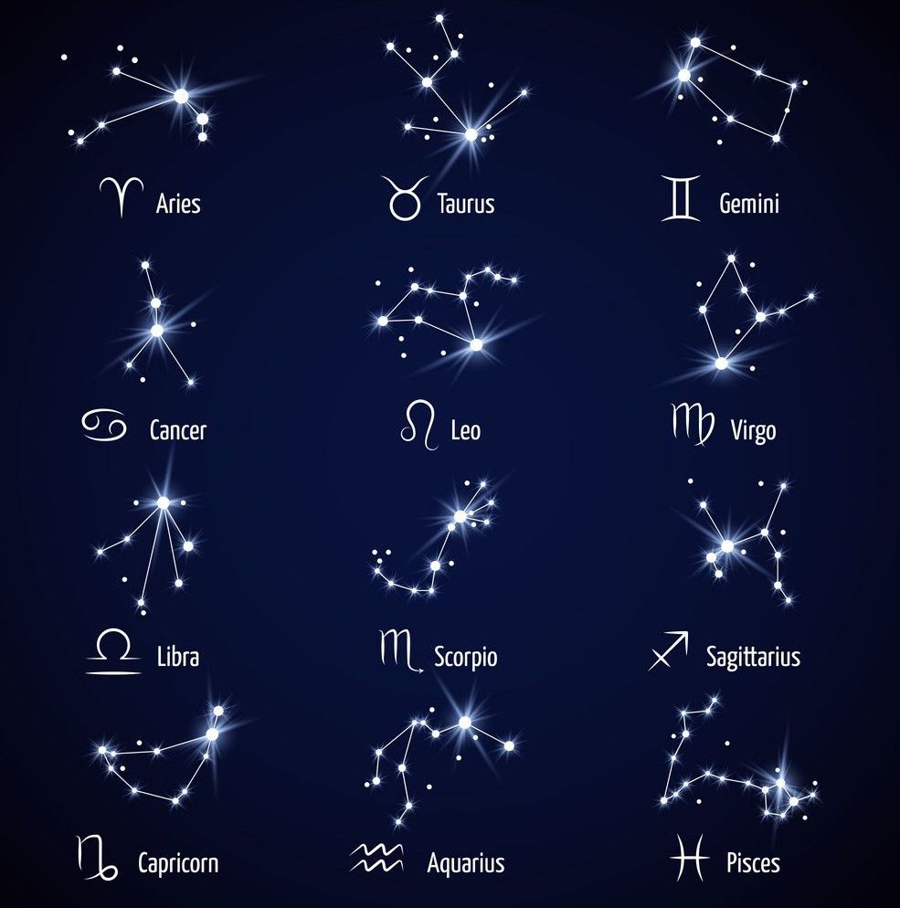

HUBBLE SPACE TOUR
INTERNATIONAL SPACE STATION

INTERNATIONAL SPACE STATION
The International Space Station (ISS) is a modular space station (habitable artificial satellite) in low Earth orbit. The station serves as a microgravity and space environment research laboratory in which scientific research is conducted in astrobiology, astronomy, meteorology, physics, and other fields. The ISS is suited for testing the spacecraft systems and equipment required for possible future long-duration missions to the Moon and Mars.
The 88 different constellations divide up the entire night sky as seen from all around the Earth. Star maps are made of the brightest stars and the patterns that they make which give rise to the names of the constellations. The maps of the stars represent the position of the stars as we see them from Earth. The stars in each constellation may not be close to each other at all. Some of them are bright because they are close to Earth while others are bright because they are very large stars.
Not all of the constellations are visible from any one point on Earth. The star maps are typically divided into maps for the northern hemisphere and maps for the southern hemisphere. The season of the year can also affect what constellations are visible from where you are located on Earth.
Here are a few of the more famous constellations:
The zodiac constellations are the constellations that are located within a band that is about 20 degrees wide in the sky. This band is considered special because it is the band where the Sun, the Moon, and the planets all move.
 There are 13 zodiac constellations. Twelve of these are also used as signs for the zodiac calendar and astrology.
Constellations are useful because they can help people to recognize stars in the sky. By looking for patterns, the stars and locations can be much easier to spot. The constellations had uses in ancient times. They were used to help keep track of the calendar. This was very important so that people knew when to plant and harvest crops. Another important use for constellations was navigation. By finding Ursa Minor it is fairly easy to spot the North Star (Polaris). Using the height of the North Star in the sky, navigators could figure out their latitude helping ships to travel across the oceans.